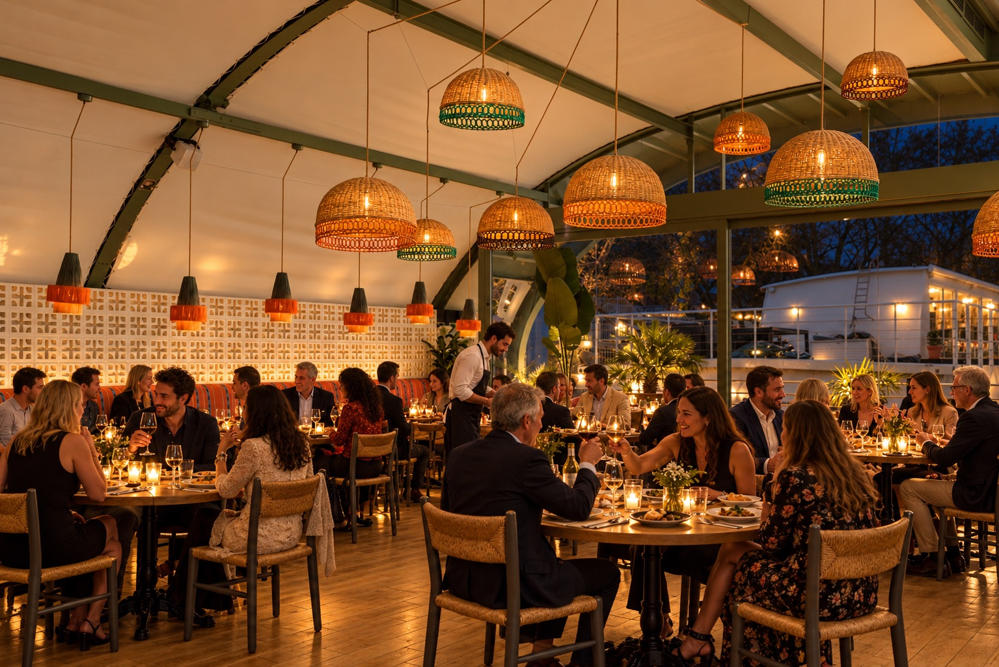

Nos lieux
Brasseries historiques, restaurants, péniche et jardins, à Paris et en Île-de-France : un seul interlocuteur pour toutes nos maisons.

Notre accompagnement
Une seule équipe pour nos trente maisons : elle vous propose sous 24 heures les lieux qui vous ressemblent, puis prépare avec nos chefs et nos maîtres d’hôtel chaque détail, jusqu’au dernier invité.
Rencontrer l’équipeVos événements
Du comité de direction à la soirée dansante, retrouvez les lieux qui s’y prêtent, avec leur capacité pour chaque configuration.
Nos adresses
Des Champs-Élysées à la Bastille, de Saint-Germain aux bords de Seine : survolez la carte pour découvrir nos maisons.
Bertrand Hospitality est la maison art de vivre du Groupe Bertrand, premier groupe français indépendant de restauration et d’hôtellerie.
Au-delà de l’événement
Prolongez l’événement en accueillant vos invités dans nos hôtels parisiens, comme l’Hôtel Norman, à deux pas des Champs-Élysées.
Votre événement
La date, le format, le nombre d’invités : nous vous proposons les lieux qui s’y prêtent, avec un seul interlocuteur du premier échange au jour J.